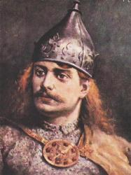
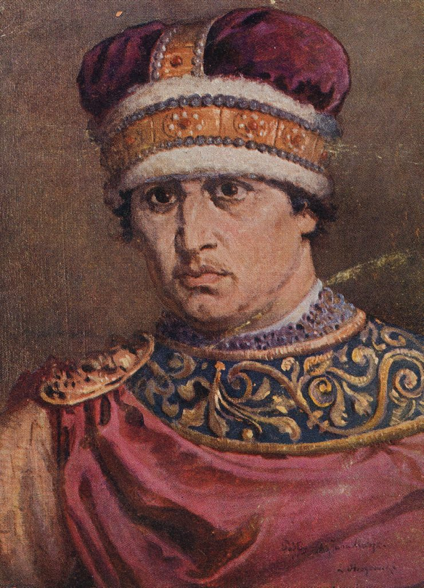
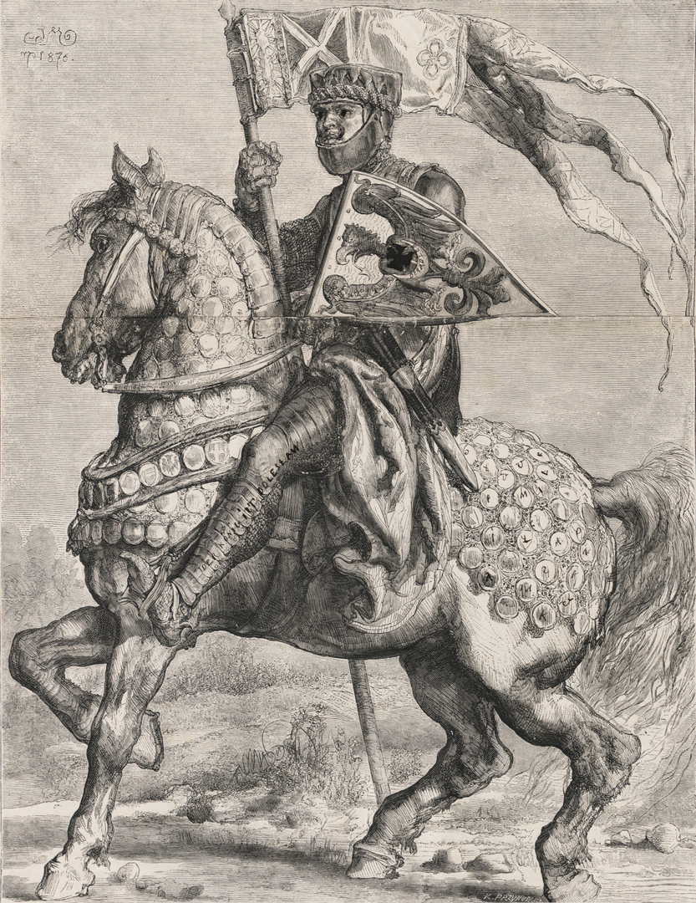
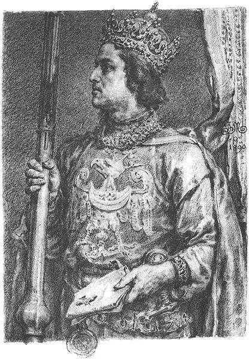
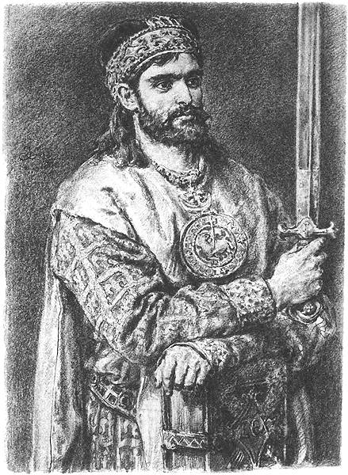
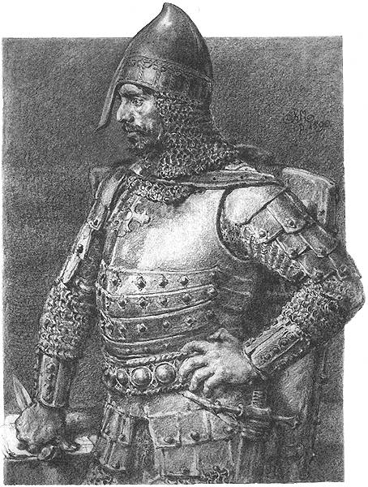
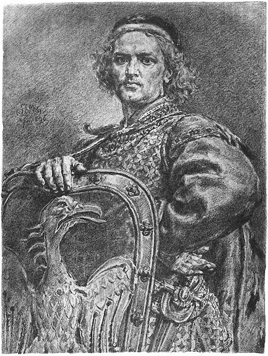
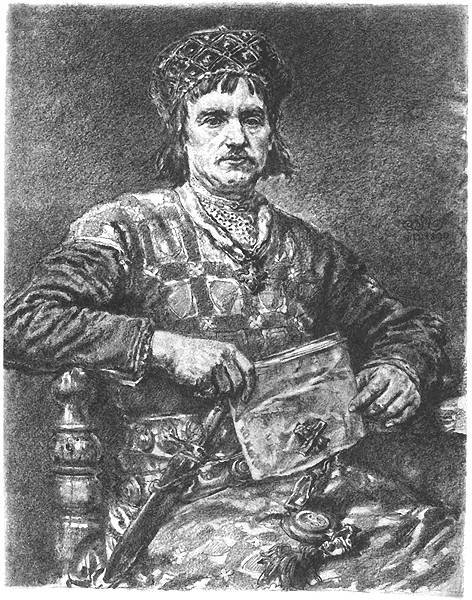
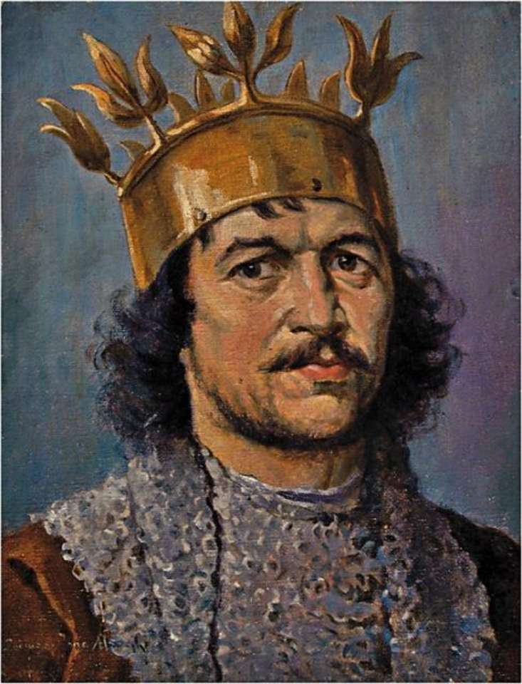

Władcy
Bolesław III Krzywousty
Książę Polski. Pochodził z dynastii Piastów, był synem Władysława I Hermana i Judyty czeskiej. Ojciec książąt: Władysława II Wygnańca, Bolesława IV Kędzierzawego, Mieszka III Starego, Henryka Sandomierskiego i Kazimierza II Sprawiedliwego.
Śmierć Władysława Hermana w 1102 roku spowodowała podział kraju pomiędzy jego synów. Zbigniew otrzymał Wielkopolskę, Kujawy i Mazowsze, a Bolesław Krzywousty otrzymał Małopolskę, Śląsk i Ziemię Lubuską. W 1107 roku wybuchła wojna między braćmi, którą wygrał Bolesław. Zbigniew uciekł do Niemiec, gdzie uzyskał poparcie cesarza Henryka V.
W 1109 roku doszło do najazdu cesarza niemieckiego na Polskę. Mimo przewagi liczebnej Niemców Bolesław prowadził skuteczną partyzancką walkę. Ostatecznie Polacy odnieśli zwycięstwo dzięki obronie grodów śląskich, takich jak Głogów, Bytom i Wrocław. Zbigniew powrócił do kraju, ale nie odzyskał swojej dzielnicy.
Bolesław w latach 1116-1119 opanował Pomorze Gdańskie oraz wcielił do Polski. W latach 1121-1122 zdobył Szczecin oraz podporządkował sobie Pomorze Zachodnie, Wolin, Uznam, a być może Rugię. Terytoria te, jednak nie zostały włączone do Polski, książę Warcisław złożył hołd lenny i musiał opłacać coroczny trybut. Następnie Bolesław zadbał o chrystianizację pogańskiego Pomorza.
Książę Magdeburski zaniepokojony tym, wystarał się o dwie bulle podporządkujące wszystkie polskie diecezje arcybiskupskie w Magdeburgu. W 1135r. na zjeździe w Marseburgu w 1135 r. złożył Lotarowi III hołd z Pomorza Zachodniego. W 1136r. papież wystawił bullę gnieźnieńską, w której potwierdził niezależność polskiego kościoła
Władysław II Wygnaniec
Władysław II Wygnaniec (ur. 1105, zm. 30.05.1159) - Polski książę pochodzącym z dynastii Piastów. Był synem księcia Bolesława III Krzywoustego i Zbysławy ruskiej. Po śmierci swojego ojca w 1138 roku Władysław II Wygnaniec odziedziczył księstwo śląskie i dzielnicę senioralną, pod jego zwierzchnictwem było Pomorze.
W roku 1142 wybuchły otwarte walki. Książę Władysław dzięki posiłkom ruskim odnosił sukcesy. Jednak w 1144 roku po porażce w bitwie nad Pilicą, doszło do kompromisowej ugody. Walki te osłabiły autorytet władzy. Na początku 1146 roku Władysław złamał wcześniejszą ugodę i zaatakował Poznań. Poniósł jedank klęske, arcybiskup Jakub wyklął Władysława. Pokonany Władysław musiał uciekać z żoną i dziećmi do Niemiec.
Kilku niemieckich monarchów podejmowało próby przywrócenia władzy Władysławowi Wygnańcowi, jednak tylko umocniły one wpływy cesarstwa w Polsce. Pierwsza interwencja miała miejsce w 1146 roku przez cesarza Konrada III, jednak nie udało się osiągnąć celu. Kolejna wyprawa podjęta przez Fryderyka Barbarossę zakończyła się układem w Krzyszkowie z bratem Władysława, Bolesławem Kędzierzawym, który został nowym seniorem.
Niestey, Władysław zmarł nie doczekawszy się powrotu do Polski. ochowany został w klasztorze Cystersów w Pforcie.
Bolesław I Wysoki
Bolesław I Wysoki(ur. 1127, zm. 8.12.2021) - książę śląski, najstarszy syn Władysława II Wygnańca i Agnieszki austriackiej.
W 1146 roku przeżył klęskę i upadek rządów Władysława. Razem z rodzicami i braćmi uszedł do Niemiec. W 1147 r. brał udział w cesarskiej wyprawie krzyżowej do Ziemi Świętej. Kilkakrotnie przebywał na dworze cesarskim. Dwukrotnie uczestniczył w wyprawach cesarza Fryderyka I Barbarossy do Włoch; pod Mediolanem w 1162 r. odznaczył się w pojedynku, pokonując wyjątkowej postury przeciwnika.
W 1163 roku cesarz Fryderyk Barbarossa zmusił Bolesława IV Kędzierzawego do przyjęcia synów Władysława Wygnańca do kraju. Bolesław otrzymał Śląsk jako swoją dzielnicę, jednak główne grody pozostawały pod kontrolą księcia zwierzchniego. Jego rządy były początkowo chwiejne z powodu wrogów wewnętrznych, w tym brata Mieszka i syna Jarosława.
Rządy Bolesława z początku okazały się bardzo chwiejne. Wrogów miał nie tylko w księciu zwierzchnim, lecz także w pokrzywdzonym bracie Mieszku, a nawet własnym synu Jarosławie. Mieszko i Jarosław zaatakowali Bolesława w 1172 roku, który ratował się ucieczką. Uzyskał pomoc niemiecką i odzyskał swoją dzielnicę. Wówczas zapewne zaciągnął szczególne zobowiązania (hołd lenny lub obowiązek trybutarny) wobec Cesarstwa.
W 1177 roku Bolesław został wypędzony przez Mieszka i Jarosława. Jednak dzięki poparciu nowego księcia zwierzchniego, Kazimierza Sprawiedliwego, powrócił do władzy, chociaż został ograniczony do środkowego Śląska, z Wrocławiem i Legnicą. Jarosław otrzymał Opole, a Głogów przypadł najmłodszemu synowi Władysława Wygnańca, Konradowi. Niestety, Konrad zmarł bezpotomnie, więc jego posiadłości powróciły do Bolesława.
Nie odnosząc sukcesów w polityce, okazał się dobrym gospodarzem swej dzielnicy. Świadomie starał się przenosić na Śląsk wzory stosunków obserwowanych podczas pobytu w Niemczech. Pierwszy z książąt polskich zaczął sprowadzać osadników z Niemiec. Lat jego rządów sięgają też początki górnictwa złota w okolicy Złotoryi śląskiej, organizowanego z pomocą niemieckich fachowców. Z akcją kolonizacyjną wiązała się też fundacja klasztoru Cystersów w Lubiążu (1175), cystersi bowiem również ściągali osadników niemieckich.
Henryk I Brodaty
Henryk I Brodaty(ur. między 1165 a 1170, zm. 19.03.1238) - był polskim księciem. Jego ojcem był Bolesław I Wysoki, a matką Krystyna. Ze względu na konflikt z starszym bratem Jarosławem oraz śmierć trzech starszych braci, Henryk stał się głównym dziedzicem Bolesława Wysokiego.
Po objęciu władzy w 1201 roku, Henryk musiał stawić czoła konfliktowi z Mieszkiem Plątonogim, który przejął ziemię opolską. Choć nie zdołał odzyskać tych ziem, Henryk i Mieszko próbowali przywrócić zasadę senioratu, która została określona w testamencie Bolesława Krzywoustego.
Henryk zawarł sojusz z księciem wielkopolskim Władysławem Laskonogim, który udzielił mu przelotowo Kalisza w zamian za ziemię lubuską. Jednak niemieckie siły szybko zagarnęły Lubusz w 1209 roku. Henryk odzyskał tę ziemię w latach 1210-1211 i rozszerzył swoje panowanie na część Dolnych Łużyc. W 1217 roku zawarł nowy sojusz z Władysławem Laskonogim i Leszkiem Białym, zapewne w celu wzajemnego dziedziczenia w przypadku bezpotomnej śmierci któregoś z tych książąt. Laskonogi ponownie otrzymał Lubusz, ale stracił go ponownie, co wymagało interwencji Henryka przeciwko Brandenburczykom w 1225 roku.
Wspólna akcja trzech najpotężniejszych książąt Piastowskich umożliwiła podjęcie działań politycznych na szczeblu ogólnopolskim. W latach 1218-1223 wznowiono akcję misyjną w Prusach, a Henryk organizował wyprawy krzyżowe. Być może to on był inicjatorem przekazania walki z Prusami zakonowi krzyżackiemu w 1230 roku.
W 1225 roku Henryk bezskutecznie próbował obalić rządy Leszka Białego w Krakowie. Incydent ten nie zniszczył jednak sojuszu trzech książąt. W 1227 roku wystąpili wspólnie przeciwko Świętopełkowi gdańskiemu i Władysławowi Odonicowi wielkopolskiemu. Niestety, podczas zjazdu w Gąsawie doszło do zdrady, w której zginął Leszek Biały, a Henryk został ciężko ranny. Uratował go niemiecki rycerz Peregryn von Wiesenburg.
Po śmierci Leszka Białego, Władysław Laskonogi objął Kraków, ale szybko przekazał bezpośrednie rządy Henrykowi w 1228 roku. Jednak Henryk musiał stawić czoła Konradowi I mazowieckiemu, który również dążył do panowania nad Krakowem. W wyniku walk został podstępnie porwany przez Konrada i zmuszony do zrezygnowania z Krakowa w 1229 roku. W 1230 roku objął rządy w księstwie opolskim.
W 1231 roku zmarł Władysław Laskonogi, przekazując dziedzictwo Henrykowi. Ponownie objął rządy w Krakowie, broniąc się przed atakami Konrada i zawierając z nim pokój w 1233 roku. Następnie zaatakował Wielkopolskę, gdzie rządził jego bratanek, Władysław Odonic. W 1234 roku zdobył wszystkie ziemie wielkopolskie na lewym brzegu Warty. Posiadając znaczne obszary (znane jako monarchia Henryków Śląskich) i przewagę nad innymi książętami, uważał się za władzę ogólnopolską.
Henryk Brodaty prowadził aktywną działalność kolonizacyjną, sprowadzając osadników z Niemiec i zakładając nowe wsie, zwłaszcza na słabo zaludnionym Pogórzu Sudeckim. Wraz z wioskami zakładał miasta na prawie niemieckim, takie jak Złotoryja, Lwówek czy Wrocław. Kolonizacja ta przyczyniła się do szerokiego rozpowszechnienia zachodnich wzorców prawnych, technologicznych i obyczajowych. Na dworze książęcym gościło wielu rycerzy i duchownych z Niemiec. Henryk wznosił murowane rezydencje wzorowane na cesarskich pałacach, z najbardziej znaną w Legnicy.
Henryk miał napięte stosunki z Kościołem, co spowodowało, że w ostatnim roku swojego życia został obłożony klątwą kościelną. Jednak był człowiekiem pobożnym, co prawdopodobnie miało wpływ na niektóre aspekty jego życia, takie jak noszenie brody i tonsury. Był dobroczyńcą zakonów, zwłaszcza cystersów, i ufundował klasztor Cysterek w Trzebnicy w 1202 roku. Brał również udział w fundacji klasztoru Cystersów w Henrykowie w 1222 roku.
Henryk był żonaty od około 1190 roku z Jadwigą, córką hrabiego Bertolda von Andechs, która należała do jednej z najważniejszych rodzin niemieckich tamtej epoki. Mieli liczne potomstwo, ale tylko syn Henryk II Pobożny oraz córka Gertruda, która została mniszką i opatką w Trzebnicy, przetrwali do dorosłości.
Henryk II Pobożny

Henryk II Pobożny(ur. ok. 1220 - zm. 9.04.1241) - książę śląski, krakowski i wielkopolski, syn Henryka I Brodatego i świętej Jadwigi. Po śmierci starszych braci, stał się jedynym dziedzicem.
Przez wiele lat przygotowywał się pod opieką ojca do objęcia władzy. Miał własny dwór i pieczęć. W krytycznych momentach, gdy ojciec był chory (1227-1228) lub w niewoli (1229), zastępował go. Od 1234 roku zarządzał ziemiami wielkopolskimi, które były wcześniej kontrolowane przez Henryka Brodatego. Po śmierci ojca (1238), objął władzę na Śląsku i w Krakowie. Potrafił utrzymać pokój z wrogiem Konradem I mazowieckim, ale musiał zgodzić się na usamodzielnienie księcia Bolesława V Wstydliwego w Sandomierzu i Mieszka II Otyłego w Opolu (nad którymi Henryk Brodaty sprawował opiekę). Skutecznie odpierał ataki Brandenburgii na kluczowe grody pogranicza, takie jak Lubusz i Santok.
Henrykowi II udało się zażegnać spór z Kościołem, które ojciec wcześniej toczył, poprzez nawiązując kontakty z opozycją popieraną przez papiestwo przeciwko cesarzowi Fryderykowi II w Niemczech. Papież nakazał polskim biskupom pojednanie się z księciem śląskim. Henryk jednak zerwał z tradycyjną sympatią jego ojca i dziada wobec cesarzy z dynastii Hohenstaufów. Nawet zaproponował zorganizowanie elekcji nowego króla niemieckiego w Lubuszu.
W bitwie pod Legnicą 9 kwietnia 1241 roku Henryk doznał druzgocącej klęski. Prawdopodobnie dostał się do niewoli i został ścięty, choć istnieje inna wersja mówiąca o tym, że poległ w walce. Klęska ta oznaczała również upadek politycznego dzieła Henryka Pobożnego i jego ojca.
Henryk był żonaty z Anną, córką króla czeskiego Przemysła Ottokara I. Mieli liczne potomstwo, w tym synów: Bolesława II Rogatki, Mieszka, Henryka III Białego, Konrada I i Władysława, oraz córki: Gertrudę, Konstancję oraz Agnieszkę i Jadwigę.
Henryk II Pobożny zdobył pośmiertną sławę dzięki swojej śmierci w walce z poganami. To wydarzenie odbiło się szerokim echem w całej Europie. Bitwa pod Legnicą i męczeńska śmierć księcia stały się trwałym elementem śląskiej tradycji regionalnej, szczególnie pielęgnowanej przez ludność niemiecką. Motywy te były również wykorzystywane w ramach ideologii "polskiego przedmurza chrześcijaństwa".
Henryk IV Prawy
 Henryk IV Prawy, znany również jako Henryk Probus, urodził się około 1257 lub 1258 roku.
Był synem Henryka III Białego, księcia wrocławskiego, i Judyty mazowieckiej.
Po śmierci ojca w 1266 roku, znalazł się pod opieką swojego stryja Władysława, arcybiskupa salzburskiego, a po jego śmierci w 1270 roku, opiekę nad nim przejął król czeski Przemysł Ottokar II.
W tym czasie Henryk spędził czas na dworze w Pradze, co miało duży wpływ na jego rozwój kulturalny i polityczny.
Henryk IV Prawy, znany również jako Henryk Probus, urodził się około 1257 lub 1258 roku.
Był synem Henryka III Białego, księcia wrocławskiego, i Judyty mazowieckiej.
Po śmierci ojca w 1266 roku, znalazł się pod opieką swojego stryja Władysława, arcybiskupa salzburskiego, a po jego śmierci w 1270 roku, opiekę nad nim przejął król czeski Przemysł Ottokar II.
W tym czasie Henryk spędził czas na dworze w Pradze, co miało duży wpływ na jego rozwój kulturalny i polityczny.
Henryk był miłośnikiem zachodniej kultury dworskiej i organizował turnieje, w których sam brał udział. Otaczał się zagranicznym rycerstwem, głównie niemieckim, i gościł sławnych poetów. Sam również pisał piękne wiersze liryczne w języku górnoniemieckim. Jako dziedzic księstwa wrocławskiego, największej i najzamożniejszej dzielnicy Śląska, podjął próbę podporządkowania sobie pozostałych książąt śląskich.
Henryk prowadził również spór z biskupem wrocławskim Tomaszem II, który domagał się takich samych przywilejów, jakie posiadał Kościół w innych dzielnicach piastowskich. Spór ten ciągnął się przez większość lat panowania Henryka, a książę konfiskował dobra biskupie i usuwał niechętnych sobie duchownych.
Po śmierci księcia krakowskiego Leszka Czarnego w 1288 roku, Henryk próbował sięgnąć po Kraków i stoczył walkę z innymi pretendentami, takimi jak Władysław Łokietek. Ostatecznie udało mu się zdobyć Kraków, ale jego panowanie nie zdobyło poparcia w społeczeństwie małopolskim. Opowiedzieli się za nim tylko mieszczanie (podczas swych krótkich rządów lokował Wieliczkę), natomiast możni i rycerstwo byli mu niechętni, a opozycyjnie nastawionego biskupa Pawła z Przemankowa książę uwięził. Podobno na Wawelu zapoznał się legendą świętego Stanisława i pod jej wpływem zapragnął zdobyć królewska koronę. O zgodę na koronację zwrócił się do króla niemieckiego Rudolfa oraz do papieża, ale wyniku tych zabiegów już nie dożył.
Henryk IV był dwukrotnie żonaty. Jego pierwszą żoną była córka Władysława opolskiego, a drugą żoną była Matylda, córka margrabiego brandenburskiego. Nie miał potomstwa. Zmarł 24 czerwca 1290 roku i został pochowany w kościele Świętego Krzyża we Wrocławiu. Jego następcami byli Henryk I głogowski, który dostał Księstwo wrocławskie, Kraków zaś dostał Przemysł II.
Bolesław IV Kędzierzawy

Bolesław IV Kędzierzawy (ok. 1121-1122 - 5 stycznia 1173) był księciem Mazowsza i Kujaw. Był synem Bolesława III Krzywoustego i Salomei, córki Henryka, hrabiego Bergu. Jego rok urodzenia jest niepewny, szacuje się, że mógł się urodzić w latach 1121-1122, ale niektóre źródła podają również inne daty, takie jak około 1118 lub około 1125.
Po śmierci ojca w 1138 roku, państwo zostało podzielone zgodnie z wcześniejszą decyzją Bolesława Krzywoustego. Bolesław IV odziedziczył Mazowsze z Kujawami. W kolejnych latach doszło do konfliktu między Bolesławem a jego młodszymi braćmi, na czele których stanął prawdopodobnie Bolesław (zapewne wspólnie z Mieszkiem).. W wyniku wojny domowej, która miała miejsce w latach 1144-1146, Bolesław pokonał Władysława, który musiał opuścić kraj. Bolesław został nowym księciem i objął Mazowsze, Kujawy oraz dzielnicę pryncypacką z Krakowem. Zdobył również ziemie łęczycką, sieradzką oraz Śląsk z ziemią lubuską.
W 1146 roku w obronie praw Władysława wystąpił król Niemiec Konrad III, który zorganizował nawet ekspedycję do Polski. Jednak ekspedycja utknęła na Śląsku, a król zadowolony z obietnicy hołdu wycofał się. Bolesław zawarł sojusz z Sasami i wysłał wyprawę na Połabie w 1147 roku, która wzięła udział w krucjacie przeciwko Słowianom połabskim.
W 1149 roku Bolesław IV podjął wyprawę na Ruś, docierając do okolic Łucka i Włodzimierza Halickiego. W 1157 roku nie był w stanie powstrzymać kolejnej wyprawy cesarskiej, dlatego złożył hołd cesarzowi Fryderykowi I Barbarossie w Krzyszkowie (pod Poznaniem). W wyniku traktatu krzyszkowskiego Bolesław zobowiązał się do płacenia trybutu i przywrócenia dzielnicy śląskiej Władysławowi. Cesarskim zakładnikiem został najmłodszy brat Bolesława, Kazimierz. Działania te umocniły władzę Bolesława, a cesarz ostatecznie porzucił sprawę księcia Władysława.
W 1163 roku Bolesław przywrócił synom Władysława dzielnice Śląskom, ale jeszcze przez pewien czas kontrolował główne grody tej dzielnicy. W 1166 roku, wraz z braćmi, zorganizował wyprawę przeciwko Prusom, aby zabezpieczyć północną granicę kraju. Jednak wyprawa zakończyła się klęską, a Henryk sandomierski zginął, a sam Bolesław ledwo uniknął śmierci i z niedobitkami wojsk zdołał uciec z pruskiej zasadzki. Pod koniec swojego życia zaangażował się także w konflikt z panującymi na Śląsku synami Wygnańca (1172). Ponownie interweniował cesarz Fryderyk I Barbarossa i wygnani Władysławowicze zostali przywróceni na Śląsk.
Bolesław zmarł w wieku około 50 lat. Pozostawił po sobie tylko chorego i nieletniego syna, Leszka, którego opiekę powierzył swojemu najmłodszemu bratu, Kazimierzowi. Władzę zwierzchnią przejął Mieszko, zwany Starym. Miejsce pochówku Bolesława nie jest znane, możliwe, że został pochowany w katedrze płockiej.
Bolesław IV był dwukrotnie żonaty. Pierwszą jego żoną była księżniczka ruską Wierzchosława, córka księcia Wsiewołoda. Z tego małżeństwa pochodziły dwie osoby: Bolesław oraz nieznana córka. Drugą żoną Bolesława była Maria, prawdopodobnie księżniczka ruską. Drugie małżeństwo miało miejsce około 1160 roku.
Mieszko III Stary

Mieszko III Stary (ok. 1122-1125 - 13 marca 1202) był polskim księciem, a także wielkim księciem Polski. Był trzecim synem Bolesława III Krzywoustego i Salomei, córki Henryka, hrabiego Bergu. Po śmierci ojca w 1138 roku otrzymał dzielnicę wielkopolską.
Mieszko III był aktywnym uczestnikiem wydarzeń politycznych swojej epoki. W latach 1142-1146 walczył wraz z bratem, Bolesławem IV Kędzierzawym, przeciwko najstarszemu bratu, Władysławowi II, który dążył do przywrócenia jedynowładztwa w Polsce. W 1147 roku wziął udział w wyprawie krzyżowej przeciwko Słowianom połabskim.
Po śmierci Bolesława Kędzierzawego w 1173 roku, Mieszko III objął tron pryncypacki w Krakowie i tytułował się księciem całej Polski. Dążył do umocnienia swojej władzy i stawił czoło próbom uszczuplenia praw monarszych przez możnych. Jego fiskalna polityka, w tym manipulacje monetarne, miała na celu umocnienie jego pozycji jako seniora w całej Polsce.
Mieszko III osiągnął również sukcesy w polityce zagranicznej dzięki małżeństwom swoich córek. Przywrócił zwierzchnictwo Polski nad Pomorzem Zachodnim. Jego stanowcze egzekwowanie praw wobec możnowładztwa i oparcie się na kadrze urzędniczej z Wielkopolski doprowadziło do buntu możnych, który poparł biskup krakowski Gedko.
W 1191 roku opanował Kraków, lecz wkrótce stracił go na rzecz Kazimierza Sprawiedliwego. Przez kolejne lata toczył walki i próbował odzyskać tron, ale dopiero w 1199 roku, dzięki ugodzie z biskupem krakowskim i wojewodą, ponownie objął władzę w Krakowie. Jednak już większość czasu spędzał w Kaliszu, oddając faktyczną władzę możnym. Zmarł w 1202 roku, a po jego śmierci tron krakowski przejął syn Władysław Laskonogi.
Mieszko III Stary był dwukrotnie żonaty. Jego pierwszą żoną była Elżbieta, księżniczka węgierska, a drugą żoną była Eudoksja, córka wielkiego księcia kijowskiego Izjasława. Miał liczne potomstwo, w tym pięciu synów i cztery córki.
Bolesław Pobożny

Bolesław Pobożny (ur. po 1221, zm. 13/14 IV 1279) był księciem wielkopolskim, młodszym synem Władysława Odonica i Jadwigi. Po śmierci ojca razem z bratem Przemysłem I, wspólnie sprawowali władzę. Wkrótce Bolesław otrzymał samodzielne władanie nad dzielnicą kaliską, a później gnieźnieńską, być może związane z jego staraniami o odzyskanie ziemi lądzkiej.
W 1250 roku został uwięziony przez brata, ale po trzech latach odzyskał wolność i otrzymał dzielnicę gnieźnieńską i kaliską. Po śmierci brata w 1257 roku, Bolesław przejął samodzielne rządy w całej Wielkopolsce i sprawował opiekę nad bratankiem Przemysłem II. W 1261 r. odzyskał ziemię lądzką i na pewien czas podporządkował sobie Kujawy, a w 1271 roku przekazał je Siemomysłowi Konradowicowi.
Jedną z głównych zasług Bolesława Pobożnego było prowadzenie walki z Marchią Brandenburską, zwłaszcza o Santok i Drezdenko. Po śmierci Przemysła I Brandenburgia złamała wcześniejsze porozumienia i wznowiła wojnę. Doszło do spalenia Poznania. Zagrożenie spowodowało zbliżenie Bolesława z książętami Pomorza Gdańskiego. W 1272 roku pomógł Mściwojowi odzyskać Gdańsk, który był opanowany przez Brandenburgię. W celu umocnienia sojuszu z Pomorzem, zaaranżował ślub swego bratanka Przemysła II z Ludgardą, wnuczką Barnima, księcia zachodniopomorskiego. Pod koniec swoich rządów Bolesław zintensyfikował walki z Brandenburgią, a w 1278 roku wraz z Mściwojem pokonał Ottona IV pod Myśliborzem, odzyskując Santok.
Bolesław Pobożny został pochowany w katedrze poznańskiej. Był żonaty z Jolentą-Heleną, córką króla węgierskiego Beli IV. Miał trzy córki: Elżbietę, Jadwigę oraz Annę.
Przemysł I
Przemysł I (ur. między 5 czerwca 1220 a 4 czerwca 1221, zm. 4 czerwca 1257) był księciem wielkopolskim. Synem Władysława Odonicica i Jadwigi, prawdopodobnie córki Mściwoja I gdańskiego. Po raz pierwszy pojawił się w dokumentach ojca w 1232 roku. Po śmierci ojca (1239) formalnie sprawował współrządy razem z młodszym bratem Bolesławem, choć faktycznie zachował pełnię władzy do 1247 roku i reprezentował Wielkopolskę w polityce zagranicznej aż do swojej śmierci.
Po upadku "monarchii Henryków śląskich" i śmierci Henryka II Pobożnego udało mu się odzyskać w 1241 roku południową Wielkopolskę, a w 1242 roku Międzyrzecze i Zbąszyń. W 1243 roku przy wsparciu Krzyżaków odebrał Nakło, które było zajęte przez Pomorzan i toczył wojny z Świętopełkiem o to terytorium aż do 1256 roku. Santok odzyskał w 1247 r. W celu zabezpieczenia południowej granicy zawarł małżeństwo w 1244 roku z Elżbietą, córką Henryka Pobożnego, co ułatwiło mu odzyskanie Kalisza. Ziemie rudzkie na południu opanował w 1249 roku, co zakończyło proces rewindykacji terytoriów utraconych przez jego ojca.
W polityce wewnętrznej kontynuował linie swojego ojca, współpracując z Kościołem, co jednak doprowadziło do konfliktu z rycerstwem. W rezultacie w 1247 roku musiał przekazać Bolesławowi Pobożnemu osobną dzielnicę kaliską. W 1248 roku uwięził Tomasza z rodu Nałęczów oraz jego synów, likwidując tym samym stronnictwo prośląskie. Uwolnił ich w następnym roku, gdy doszło do konfliktu na Śląsku między synami Henryka Pobożnego, popierając swojego szwagra Konrada przeciwko Bolesławowi II Rogatce. Dzięki temu Konrad uzyskał własną dzielnicę.
Dążąc do zabezpieczenia zagrożonej przez Brandenburgię granicy zachodniej i osłabienia tendencji separatystycznych, przeprowadził nowy podział kraju w 1249 roku. Sam objął dzielnicę poznańską i kaliską, a bratu Bolesławowi przyznał dzielnicę gnieźnieńską. W 1250 roku, z nieznanych powodów, uwięził brata i podporządkował sobie całą Wielkopolskę. Dopiero w 1253 roku Bolesław odzyskał wolność. W latach 1254-1255 podjął próbę porozumienia z Brandenburgią poprzez małżeństwo swojej córki Konstancji z synem margrabiego brandenburskiego Jana. Jednak małżeństwo to zostało zawarte już po śmierci Przemysła (w 1260) i nie przyniosło oczekiwanych rezultatów. Przekazana w wyniku porozumienia część kasztelanii santockiej ułatwiła ekspansję Brandenburgii na wschód.
Przemysł wspierał rozwój osadnictwa na prawie niemieckim. Dbając o miasta i handel, stworzył podstawy do rozwoju gospodarczego Wielkopolski. W 1253 roku założył lewobrzeżny Poznań. W tym czasie prawdopodobnie już istniał zamek wzniesiony przez Przemysła na wzgórzu później znanym jako Góra Przemysława. Był fundatorem klasztoru Dominikanów w Poznaniu oraz klasztoru Cysterek w Owińskach.
Przedstawiano go jako wzór cnót ewangelicznych, umartwienia, miłosierdzia, skromności i miłości do pokoju, chociaż wiadomo, że był twardym wojownikiem i trzeźwym administratorem prowincji. Te zasłużone pochwały wynikają z tego, że za jego panowania z rozbitej i słabej Wielkopolski powstał ważny ośrodek polityczny, co umożliwiło jego synowi podjęcie starań o koronę królewską.
Z małżeństwa z Elżbietą, córką Henryka II Pobożnego, miał cztery córki (Konstancję, żonę Konrada brandenburskiego, Eufrozynę, Annę i Eufemię, które wszystkie trzy zostały mniszkami) oraz syna Przemysła II, który urodził się już po jego śmierci. Przemysł został pochowany w katedrze poznańskiej.
Przemysł II
Przemysł II (ur. 14 października 1257, zm. 8 lutego 1296 w Rogoźnie) był polskim księciem i władcą Wielkopolski, Krakowa i Pomorza Gdańskiego. W 1295 roku został koronowany na króla Polski. Był synem Przemysła I wielkopolskiego i Elżbiety, córki Henryka II Pobożnego.
Urodził się cztery miesiące po śmierci swojego ojca i wychowywał się pod opieką stryja Bolesława Pobożnego i jego żony Jolenty-Heleny. W wieku dziesięciu lat po raz pierwszy został wymieniony w dokumencie swojego stryja Bolesława. W 1272 roku wziął udział, formalnie jako dowódca, w wyprawie przeciwko Brandenburgii, podczas której odzyskano Drezdenko i Strzelce.
W 1273 roku uciekł z dworu gnieźnieńskiego i grożąc buntem, wymógł na stryju wydzielenie mu części Wielkopolski jako swojej dziedziny. W tym samym roku jako niezależny książę wziął udział w wojnie domowej na Śląsku. W 1276 roku zawarł przymierze z Henrykiem IV Prawym, księciem wrocławskim, zobowiązując się do udzielenia mu wszelkiej pomocy. To porozumienie doprowadziło do pogorszenia stosunków ze stryjem i klęski w bitwie pod Stolcem w 1277 roku, kiedy wyruszył na pomoc uwięzionemu Henrykowi Prawemu, schwytanemu przez Bolesława II Rogatkę.
Po śmierci Bolesława Pobożnego (1279) objął rządy nad całą Wielkopolską. W 1281 roku został uwięziony przez Henryka Prawego, który wypuścił go dopiero po odstąpieniu kasztelanii rudzkiej. Odzyskał ją w 1283/84 roku, ale stracił ją ponownie w zamian za Kalisz, który został zagarnięty przez Henryka za sprawą zdrady Sędziwoja Zaremby.
W 1287 roku Przemysł prawdopodobnie zawarł tajne porozumienie o wzajemnym dziedziczeniu z Henrykiem Prawym i Henrykiem I głogowskim. Wtedy też, nie wiadomo czy drogą wojenną, czy w ramach wspomnianego porozumienia, odzyskał kasztelanię rudzką oraz południową część ziemi kaliskiej. Stosunki z księciem wrocławskim poprawiły się i przekazał Przemysłowi Małopolskę w swoim testamencie. Przemysł prawdopodobnie także sporządził, choć nie zachował się do naszych czasów, testament, w którym wskazywał na Henryka Prawego i Henryka głogowskiego.
W 1295 roku został koronowany na króla Polski. Jego rządy były jednak krótkotrwałe, gdyż został zamordowany w 1296 roku.
Przemysł II jest znany głównie ze względu na swoje krótkie panowanie oraz tragiczną śmierć, jednakże jego działalność miała wpływ na ustalenie granic i podziały terytorialne w Polsce średniowiecznej.
Henryk Sandomierski
Henryk Sandomierski (ok.1130 - 18.10.1166) - książę sandomierski w latach 1146-1166. Szósty syn Bolesława III Krzywoustego. Data narodzin nie jest pewna i szacuje się ją na 1126-1133.
Henryk Został księciem dzielnicy sandomierskiej dopiero po wygnaniu Władysława Wygnańca (1146). W 1149 wspólnie ze starszym bratem Bolesławem wziął udział w wyprawie wspomagającej księcia ruskiego Izjasława II Pantelejmona w walkach o Kijów.
Henryk Sandomierski utrzymywał dobre stosunki z Kościołem i aktywnie wspierał jego działalność. W około 1144-1145 roku uczestniczył w hojnym obdarowaniu klasztoru Kanoników Regularnych w Trzemesznie. Prawdopodobnie to właśnie on rozpoczął budowę kościołów kolegiackich w Wiślicy i Opatowie, co świadczyło o jego pobożności i wsparciu dla instytucji kościelnych.
Podczas swojego pobytu w Ziemi Świętej nawiązał kontakty z rycerskim zakonem joannitów. Po powrocie do Polski osadził ich w swoich posiadłościach w Zagościu w Sandomierskiem. Umownie można datować założenie placówki joannickiej na lata 1154-1166.
Ze związku z brakiem potomstwa Henryk Sandomierski cały swój dorobek oddał Kazimierzowi II Sprawdliwemu.
Kazimierz II Sprawiedliwy
Kazimierz II Sprawiedliwy (ur. 1138 - 5.05.1994) - najmłodszy syn Bolesława III Krzywoustyego i Salomei. Przyszedł na świat w 1138, w roku śmierci swego ojca Bolesława Krzywoustego. od 1177 książę zwierzchni Polski (książę krakowski (z włączonym do księstwa do 1182 Kaliszem i Gnieznem)),
W 1157 roku trafił jako zakładnik na dwór cesarski. W 1166 r. Henryk Sandomierski zgniął. Ze względu na zapis w jego testamenice przyznanie Kazimierzowi dzielnicy sandomierskiej, jedak jego starsi bracia (szczególnie bolesław) nie dopuścili do objęcia całego władztwa przez Kazimierza, i przeprowadzili jego podział na trzy części.
Wkrótce możni małopolscy na czele z Jaksą i Świętosławem Piotrowicem zaproponowali Kazimierzowi tron krakowski w miejsce Bolesława Kędzierzawego, ale propozycja ta została odrzucona. Śmierć Bolesława w 1173 r. pozwoliła Kazimierzowi powiększyć swe władztwo o resztę Sandomierskiego, a władzę w Krakowie objął, jako senior dynastii, Mieszko III Stary. Równocześnie Bolesław, umierając, uczynił Kazimierza opiekunem swego małoletniego syna Leszka.
W 1177 roku bunt możnych krakowskich doprowadził do usunięcia Mieszka III Starego z tronu i zaproponowania tronu Kazimierzowi. Kazimierz zaakceptował propozycję i uzyskał poparcie biskupa krakowskiego Gedki. Jego rządy w Krakowie charakteryzowały się działaniami mającymi na celu umocnienie jego pozycji politycznej oraz uregulowanie spraw wewnątrzdynastycznych.
Najpewniej za przyzwoleniem Kazimierza w 1181 roku powrócił z wygnania Mieszko, który odzyskał wkrótce władzę w Gnieźnie i Poznaniu. Po uregulowaniu spraw wewnątrzpolitycznych książę, podejmował aktywną politykę na wschodnich kresach swojego państwa, interweniując na Rusi Halickiej i umacniając granice swojego władztwa na wschodzie. W 1186 roku odziedziczył Mazowsze po śmierci Leszka Bolesławowica.
Panowanie Kazimierza Sprawiedliwego cechowało się również dbałością o rozwój Kościoła. Dążył do wzmocnienia pozycji biskupa krakowskiego, fundował klasztory i kościoły, a także rozwijał sieć niższych okręgów administracji kościelnej.
Panowanie Kazimierza Sprawiedliwego cechowało się również dbałością o rozwój Kościoła. Dążył do wzmocnienia pozycji biskupa krakowskiego, fundował klasztory i kościoły, a także rozwijał sieć niższych okręgów administracji kościelnej.
Konrad I Mazowiecki
Konrad I Mazowiecki urodził się około 1187 lub 1188 roku jako syn Kazimierza II Sprawiedliwego. Po śmierci ojca w 1194 roku, wraz z bratem objął formalnie panowanie nad księstwami krakowskim, mazowieckim i sandomierskim, jednak faktyczną władzę sprawowali regenci.
W 1200 roku Konrad przejął samodzielne rządy na Mazowszu, które zdobył w wyniku konfliktu Mieszka III Starego z możnymi małopolskimi. Rozszerzył swoje terytorium o Kujawy w 1202 roku. W 1206 roku jego brat Leszek Biały został królem krakowskim, a Konrad był ostatnim księciem zwierzchnim, którego pozycję uznawali inni władcy dzielnicowi.
Na początku swojego panowania Konrad aktywnie wspierał swojego brata i walczył u jego boku w bitwie pod Zawichostem w 1205 roku. W 1217 roku doszło do konfliktu między Konradem a wojewodą Krystynem, który zakończył się śmiercią Krystyna. W kolejnych latach Konrad skupił się na obronie granic swojego księstwa przed najazdami Prusów, Jaćwingów i Litwinów.
Jednym z aspektów obrony pogranicza było nadawanie ziem zakonom rycerskim, których zadaniem było zwalczanie pogan. Konrad Mazowiecki nadał ziemię dobrzyńską Zakonowi Pruskich Rycerzy Chrystusowych. W 1230 roku przybyli do ziemi chełmińskiej pierwsi rycerze krzyżaccy, którzy później połączyli się z Pruskimi Rycerzami Chrystusowymi, co doprowadziło do powstania państwa krzyżackiego.
W 1227 roku po zamordowaniu Leszka Białego, brata Konrada, w Gąsawie, Konrad próbował opanować Małopolskę, jednak jego władza tam była słaba. Po kolejnych starciach z Bolesławem Wstydliwym nie udało mu się odzyskać Krakowa. Zmarł w 1247 roku, a po jego śmierci dzielnicę podzielono między dwóch jego synów.
Panowanie Konrada Mazowieckiego miało duże znaczenie dla podzielonej Polski. Podjął działania mające na celu obronę przed plemionami pruskimi, litewskimi i jaćwieskimi. Ponadto, jego rządy były związane z przybyciem zakonu krzyżackiego, który później stanowił zagrożenie dla Polski.
Kazimierz I
Kazimierz I (ur. ok. 1211, zm. 1267) - syn Konrada I Mazowieckiego,
Już za życia ojca brał udział w życiu politycznym, m.in. w jego wyprawach na Kraków. Ok. 1230/31 roku rozpoczął samodzielne rządy w Inowrocławiu, w wydzielonym przez ojca księstwie kujawskim. Do śmierci Konrada prowadził walkę z księciem Pomorza Gdańskiego Świętopełkiem, której efektem było zajęcie kasztelanii wyszogrodzkiej.
Po śmierci ojca w 1247 roku doszło do sporu o podział dziedzictwa, w którym Kazimierz przepędził swojego brata Siemowita i przejął jego dziedzictwo.
W latach 1248-1257 toczył walkę z Krzyżakami o ziemie Jaćwięgów. Był pomysłodawcą planu pokojowej chrystianizacji tych ziem, do którego pozyskał Bolesława V Wstydliwego. Jednym z elementów tego projektu było otrzymanie od papieża zgody na chrystianizację ziem jaćwięskich i przyłączenie ich do dzielnicy Kazimierza. Działania te były sprzeczne z planami Krzyżaków, którzy uważali ziemię Jaćwięgów za swoją strefę wpływów.
Kazimierz przy pomocy Świętopełka pomorskiego odebrał czasowo kasztelanię i próbował zorganizować w dzielnicy Bolesława Pobożnego opozycyjne przeciwko niemu stronnictwo. Zatarg o kasztelanie lądzką zyskał szerszy kontekst, kiedy Kazimierz zaangażował się jako stronnik króla czeskiego w rywalizację czesko-węgierską o spadek po Babenbergach.
Spowodowało to interwencję Bolesława Pobożnego, stronnika węgierskiego, wspartego przez brata Kazimierza, Siemowita. Zainicjowany przez nich bunt rycerstwa został jednak szybko stłumiony, zaś syn Leszek Czarny, wcześniej stojący po stronie przeciwników ojca, zjednany nadaniem ziemi łęczyckiej, zamienionej później na ziemię sieradzką. Ostatecznie Kazimierz w 1261 roku zrezygnował z kasztelanii lądzkiej, po kolejnym zdobyciu jej przez Bolesława.
Kazimierz I Kujawski zmarł 14 grudnia 1267 roku w Inowrocławiu i został pochowany w zniszczonej przez Krzyżaków katedrze włocławskiej.
Był trzykrotnie żonaty. Jego pierwszą żoną była Jadwiga, a drugą Konstancja, córka Henryka II Pobożnego. Z Konstancją miał dwóch synów - Leszka Czarnego i Siemomysła. Trzecią żoną był Eufrozyną, córka księcia opolskiego. Z nią miał trzech synów - Władysława Łokietka, Kazimierza II i Siemowita - oraz córkę Eufemię, żonę władcy halickiego Jerzego I.
Leszek Biały
Leszek Biały (ok. 1186-1187 - 1227) był księciem krakowsko-sandomierskim i synem Kazimierza II Sprawiedliwego oraz Heleny, córki Konrada II, księcia znojemskiego.
Wojska Mieszka zaatakowały ziemię sandomierską, a nad rzeką Mozgawą doszło do bitwy ze stronnikami Leszka (1195). Wojska małopolskie, wspierane przez księcia włodzimierskiego Romana, dowodzone były przez Mikołaja i Goworka. Bitwa była krwawa, ale nie przyniosła rozstrzygnięcia, jednak z powodu poniesionych strat Mieszko musiał wycofać się z Małopolski. Władza Leszka w Krakowie nie trwała jednak długo. W 1198 roku udzielił poparcia Romanowi w utrwalaniu jego panowania w Haliczu, a w tym samym roku księżna Helena zdecydowała się poprzeć Mieszka w staraniach o tron krakowski w wyniku politycznych sporów w Małopolsce. W rezultacie umowy z księciem wielkopolskim Konradem i Leszkiem utrzymali Mazowsze oraz Sandomierskie.
Śmierć Mieszka III Starego w 1202 roku spowodowała, że Leszek objął na mocy umowy z możnymi Sandomierskie, Krakowskie oraz ziemie sieradzką i łęczycką, a Konrad otrzymał Mazowsze z Kujawami. W 1205 roku obaj bracia stawili czoła wyprawie Romana, księcia halickiego, który próbował przejść przez ich ziemie do Niemiec, i pokonali go w bitwie pod Zawichostem. Leszek prowadził aktywną politykę na pograniczu małopolsko-ruskim. Jego zaangażowanie w politykę ruskiego księcia Daniela, syna księcia Romana, oraz współpraca z węgierskim królem Andrzejem i jego synem (a zarazem zięciem Leszka) Kolomanem nie przyniosły oczekiwanych rezultatów. W 1219 roku w umowie z księciem Danielem zrzekł się wszelkich zdobyczy na Rusi. Choć w 1224 roku jeszcze raz próbował podbić Ruś w sojuszu z królem Andrzejem, i tym razem bezskutecznie.
Pod względem polityki wewnętrznej rządy Leszka również nie były spokojne. Papież Innocenty III początkowo uznawał go za dziedzicznego władcę dzielnicy krakowskiej, ale w 1210 roku potwierdził zasadę senioratu. Wykorzystał to najstarszy członek dynastii, książę opolsko-raciborski Mieszko Plątonogi, który na kilka miesięcy objął tron krakowski. Powrót Leszka do Krakowa nastąpił prawdopodobnie w 1211 roku.
Książę starał się odbudować znaczenie władzy zwierzchniej, współpracując z Henrykiem I Brodatym i Władysławem Laskonogim. Dzięki staraniom biskupa krakowskiego Iwona Odrowąża, który wcześniej był kanclerzem książęcym, odzyskał poparcie Stolicy Apostolskiej i umiał utrzymać kontrolę nad Pomorzem Gdańskim. Brał również udział w wyprawach krzyżowych przeciwko Prusom, które odbywały się pod naciskiem papieża i biskupa pruskiego Chrystiana w latach 1222-1223. Wprowadził tajny układ z Władysławem Laskonogim, na mocy którego w przypadku śmierci jednego z nich drugi miał dziedziczyć jego dzielnicę. To wprowadziło Leszka w konflikt z Władysławem Odonicem (bratankiem Laskonogiego) oraz jego szwagrem Świętopełkiem pomorskim. Leszek zginął w 1227 roku pod Gąsawą podczas niespodziewanego ataku Świętopełka na obóz, w którym Leszek Biały i Henryk Brodaty przygotowywali się do wyprawy na Pomorze.
Jako władca Małopolski Leszek dbał o rozwój gospodarczy swojej dzielnicy, chociaż źródła rzadko o tym wspominają. Wspierał rozwój osadnictwa wiejskiego na prawie niemieckim, nadawał liczne przywileje targowe, co stanowiło wstępny etap rozwoju sieci miejskiej w Małopolsce. Interesował się również sprawami Kościoła, typowe dla władcy średniowiecznego. W 1207 roku zrezygnował z prawa do nominacji biskupów, co doprowadziło do pierwszego kanonicznego wyboru biskupa przez kapitułę w diecezji krakowskiej. Wybrano biskupa Wisława.
Leszek Biały był postacią istotną dla dziejów Polski. Jego rządy przyczyniły się do umocnienia władzy dzielnicowej w państwie piastowskim oraz rozwoju Małopolski jako odrębnej dzielnicy.
Bolesław V Wstydliwy
Bolesław V Wstydliwy (ur. 21 VI 1226, zm. 7 XII 1279) - książę krakowski i sandomierski, syn Leszka Białego i Grzymisławy, córki Ingwara, księcia łuckiego. Po śmierci ojca (1227) opiekę nad małoletnim księciem, na mocy umowy z jego matką i wcześniej z ojcem, objął książę wielkopolski Władysław Laskonogi, który adoptował Bolesława (1228). Najbliższe lata przyniosły długotrwałe walki o tron krakowski między najstarszymi przedstawicielami dynastii piastowskiej: Władysławem Laskonogim, Henrykiem I Brodatym i Konradem I mazowieckim. Do opieki nad księciem Bolesławem oraz do tronu krakowskiego rościł sobie pretensje jego stryj Konrad, książę Mazowsza, ale Grzymisława porozumiała się z Henrykiem Brodatym i on został opiekunem.
W 1233 roku Henryk Brodaty zawarł umowę z Konradem, na mocy której Bolesław otrzymał księstwo sandomierskie, gdzie rządy miała sprawować tymczasowo jego matka. Stryj jednak zagarnął północną część Sandomierskiego. W latach 1234-1235 książę, mimo młodego wieku (9 lat), zaczął wystawiać dokumenty, na których jako współwystawca występowała Grzymisława. Od 1243 roku, kiedy to po przegranej bitwie pod Suchodołem z Krakowa wycofał się Konrad, Bolesław już samodzielnie panował w ziemiach krakowskiej i sandomierskiej, używając tytułu księcia Krakowa i Sandomierza.
W okresie jego panowania Małopolskę dotknęły dwa niszczące najazdy tatarskie (1241 i 1259-1260), którym rycerstwo tej dzielnicy nie potrafiło się skutecznie przeciwstawić. Będąc sojusznikiem króla węgierskiego, udzielał mu pomocy przeciwko Czechom (1253, 1260) oraz występował przeciwko Władysławowi opolskiemu, jako sojusznikowi czeskiemu (1271). Polityka ta oraz wyznaczenie na swego następcę księcia sieradzkiego Leszka Czarnego spowodowały bunt rycerstwa małopolskiego, połączony z próbą opanowania Krakowa przez Władysława opolskiego. Buntownicy zostali pokonani w 1273 roku w bitwie pod Bogucinem, ale Bolesław, widząc osłabienie pozycji Węgier, przeszedł do obozu króla czeskiego Przemysła Ottokara II. Książę wyprawił się też przeciwko Jaćwięgom, zarzucił jednak całkowicie aktywną politykę ruską, prowadzoną przez jego ojca Leszka Białego.
O ile w polityce zewnętrznej nie miał szczęścia, o tyle jego poczynania na terenie ziemi krakowskiej i sandomierskiej były bardziej udane. Dbał o rozwój gospodarczy własnego księstwa, czemu służyły akty lokacyjne miast na prawie niemieckim (np. w 1257 Kraków, później Bochnia, Zawichost, Sącz) oraz rozwój osadnictwa wiejskiego. Przyczyniło się to do szybkiego zregenerowania strat poniesionych w wyniku najazdów tatarskich. Żywo interesował się kopalniami i warzelniami soli, co doprowadziło po kilkuletnich poszukiwaniach do odkrycia soli kamiennej w Bochni (1251). Przywrócił też prawo własności książęcej nad salinami w Bochni i Wieliczce oraz zapewnił im sprawny zarząd. Rozpoczęto także eksport soli bocheńskiej na Węgry.
Był możnym opiekunem i protektorem Kościoła. Utrzymywał dobre kontakty z biskupem krakowskim Prędotą. Stosunki uległy pogorszeniu, gdy na katedrze krakowskiej zasiadł Paweł z Przemankowa. Za jego panowania dokonano kanonizacji biskupa Stanisława (1253), a książę w związku z tym nadał katedrze krakowskiej liczne przywileje. Popierał też inne instytucje kościelne, wcześniej związane z jego dziadem i ojcem - bożogrobców z Miechowa, cystersów z Sulejowa, Koprzywnicy, Wąchocka i Jędrzejowa, joannitów z Zagości, a także klasztory na Zwierzyńcu, w Sieciechowie i Krzyżanowicach. Szczególną opieką otaczał franciszkanów i klaryski, których klasztor ufundował w Zawichoście (później przeniesiony do Skały pod Krakowem).
Swym następcą uczynił, zgodnie z wcześniejszymi postanowieniami, księcia sieradzkiego Leszka Czarnego. Został pochowany w krakowskim klasztorze Franciszkanów. Żonaty był z Kundegundą-Kingą, córką króla węgierskiego Beli IV (ok. 1247, choć Kunegunda przebywała w Polsce od 1239). Związek tych dwojga bardzo młodych ludzi miał cele polityczne i prowadził do zacieśnienia kontaktów między Arpadami i Piastami małopolskimi. Ocena postaci księcia i prowadzonej przezeń polityki jest trudna. Uwagę zwraca przede wszystkim jego działalność na polu gospodarczym i kulturalnym oraz szeroko rozwinięta działalność fundatorsko-donatorska. Utrzymywał dobre stosunki z Bolesławem Pobożnym, Konradem czerskim, Leszkiem Czarnym i Przemysłem II. Z całą pewnością nie był zamiłowanym i szczęśliwym wodzem.
Leszek Czarny
Leszek Czarny (ok. 1240-1242 - 1288) był księciem łęczyckim, sieradzkim i krakowskim. Był synem Kazimierza I kujawskiego i Konstancji, córki Henryka II Pobożnego, księcia wrocławskiego.
Leszek aktywnie uczestniczył w rządach obok swojego ojca. Jednak stosunki między nimi pogorszyły się po ponownym małżeństwie ojca z Eufrozyną, córką księcia opolskiego. W tym czasie wielu przeciwników Kazimierza kujawskiego, takich jak Bolesław Pobożny, Bolesław V Wstydliwy i Siemowit I, próbowało zjednać sobie Leszka. Jednak Leszek nie wziął udziału w ich najeździe na terytorium ojca, co zaowocowało nadaniem mu dzielnicy łęczyckiej w 1260 roku, a następnie sieradzkiej w 1263 roku.
Podczas rządów w dzielnicy sieradzkiej Leszek utrzymywał dobre relacje z Bolesławem Pobożnym i Bolesławem V Wstydliwym, który później wyznaczył go na swojego następcę w Krakowie. Po śmierci Bolesława Wstydliwego (1279) Leszek musiał stawić czoła Lwowi, księciu halickiemu, i Konradowi, księciu mazowieckiemu. Pokonał Lwa i jego sojuszników w bitwie pod Goźlicami w 1280 roku, a także odparł najazd Konrada na Małopolskę dzięki pomocy swojego brata Bolesława II i Władysława Łokietka.
Leszek angażował się również w spór z księżną Kingą, wdową po Bolesławie Wstydliwym. Kwestionował jej prawa do posiadania dóbr w Małopolsce i fundacji klasztoru Klarysek w Sączu. Konflikt ten jeszcze bardziej pogorszył małżeństwo Leszka, które już wcześniej było wystawione na próbę z powodu dynastycznych powiązań Gryfiny, żony Leszka. W 1285 roku bunt możnowładców wybuchł przeciwko Leszkowi, a on pokonał ich wojska, które zdobyły Kraków, choć nie zdołali zdobyć zamku. Po śmierci Leszka wybuchły kolejne walki o tron krakowski.
Leszek był żonaty z Gryfiną, córką Rościsława, księcia halickiego, i Anny, królewny węgierskiej, lecz nie miał dzieci. Jego rządy charakteryzowały się wzrostem gospodarczym, wspieraniem mieszczaństwa i kupców oraz nadawaniem przywilejów i umożliwianiem budowy fortyfikacji obronnych w miastach. Był także stanowczym zwolennikiem zwrotu dóbr książęcych, co można zobaczyć na przykładzie sporu z Kingą. Jego polityka miała na celu wzmocnienie mieszczaństwa i drobnego rycerstwa, co spotykało się z oporem możnowładztwa. Jednocześnie w tym okresie wzmacniała się władza księcia krakowskiego. Jego następca, Henryk IV Prawy, kontynuował tę linię politykę Leszka Czarnego.
Władysław I Łokietek

Władysław I Łokietek (1259/1260 - 2 marca 1333) był polskim księciem i królem Polski. Był synem Kazimierza I Kujawskiego i Eufrozyny Opolskiej. Po śmierci ojca w 1267 roku, był małoletni, a opiekę nad nim sprawowała matka. Podział ziem między braćmi nastąpił w 1288 roku, a Władysław otrzymał południowe Kujawy.
Władysław ożenił się z Jadwigą, córką Bolesława Pobożnego, wielkopolskiego księcia. Po śmierci brata Leszka Czarnego, przejął dzielnicę sieradzką i wystąpił jako kandydat do tronu krakowskiego, zdobywając poparcie części możnych małopolskich. Walczył o Małopolskę z Henrykiem IV Prawym, wrocławskim księciem. Mimo opanowania Krakowa, musiał z niego uciekać i zrezygnował z roszczeń do Małopolski.
Władysław zawarł sojusz z Przemysłem II wielkopolskim i po jego śmierci wystąpił jako jego następca, uzyskując poparcie wielkopolskich możnych. Objął władzę w Wielkopolsce i na Pomorzu oraz przyjął tytuł "księcia Królestwa Polskiego". Jednak nie potrafił przeciwstawić się przeciwnikom, w tym królowi czeskiemu Wacławowi II. Ostatecznie został usunięty z ziem polskich i udał się na wygnanie.
W 1304 roku, dzięki wsparciu króla niemieckiego Albrechta Habsburga, powrócił do Polski i wywołał powstanie przeciwko Czechom. Zginął skrytobójczo zamordowany Wacław III, a Łokietek objął władzę. 20 stycznia 1320 roku został koronowany na króla Polski, odbudowując trwałe Królestwo Polskie.
Władysław Łokietek prowadził politykę naprężenia stosunków z sąsiadami, w tym z Krzyżakami. W wyniku wojny z Krzyżakami stracił Kujawy, ale odniósł częściowy sukces w bitwie pod Płowcami w 1331 roku. Jego rządy były również związane z adaptacją zachodnioeuropejskich wzorców społecznych i obyczajowych w Polsce.
Władysław Łokietek zmarł w 1333 roku i został pochowany w katedrze wawelskiej. Jego syn Kazimierz III Wielki objął po nim tron i kontynuował dzieło odbudowy Królestwa Polskiego.